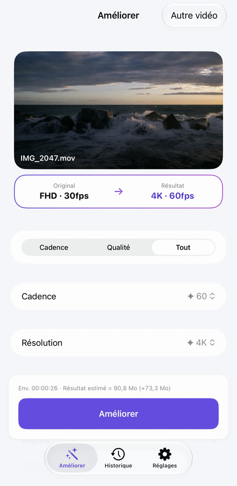
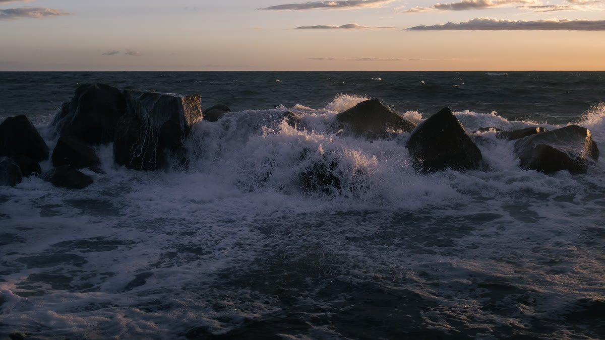
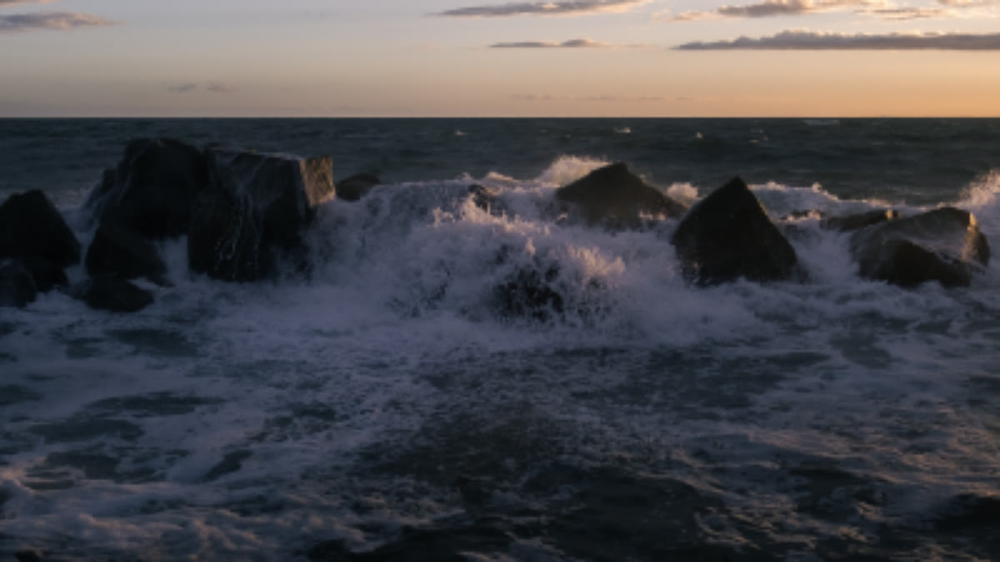
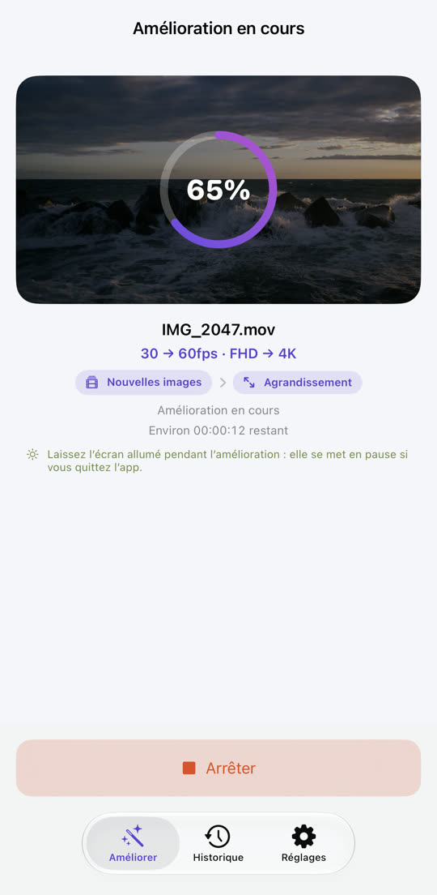
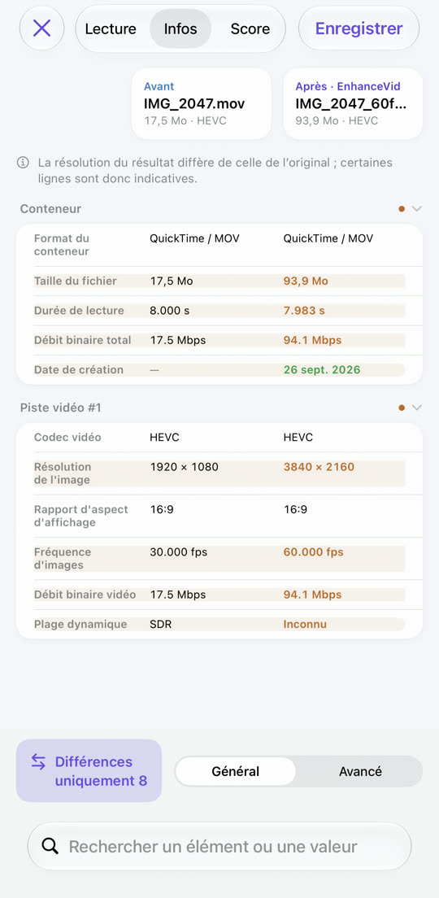
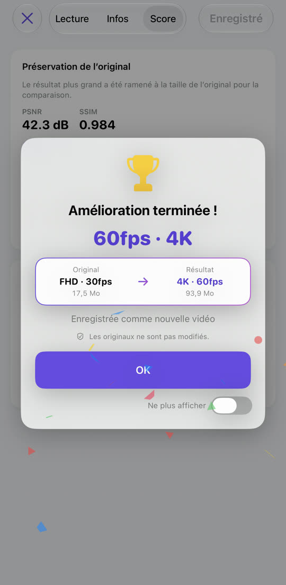

Vidéo saccadée, désormais fluide.
Vidéo floue, désormais nette.
De 30 à 60 fps, de Full HD à 4K. EnhanceVid calcule de nouvelles images entre celles que vous avez filmées et augmente la résolution pour plus de détails. Tout se fait sur votre iPhone et le résultat est enregistré comme nouvelle vidéo, à côté de l’original intact.
Télécharger dans l’App StoreGratuit · iOS 26 ou version ultérieure · iPhone · iPad · Mac avec puce Apple

Moins de flou, plus de détails.
La résolution est augmentée avec la mise à l’échelle Apple MetalFX. Faites glisser la ligne pour comparer.


OriginalAmélioréImage d’exemple : un original en basse résolution agrandi, à côté de la version améliorée.
Des mouvements saccadés, rendus fluides.
De nouvelles images sont calculées entre les images d’origine. Les changements de scène ne sont jamais mélangés : pas d’image fantôme.
Le mouvement est exagéré pour rendre la différence visible.
Choisir, lancer, comparer, enregistrer.



Tout ce qu’il faut, intégré.
Nettoyez les vidéos granuleuses tournées en basse lumière. Sur les appareils compatibles.
4K 60 fps vers 30 fps, 4K vers Full HD : réduire est aussi possible.
Lecture côte à côte, tableau des données et scores de qualité (PSNR, SSIM, VMAF en option).
Les vidéos HDR et Dolby Vision filmées avec l’iPhone restent en HDR.
Vidéos de Photos et de l’app Fichiers, y compris MKV, WebM et AVI.
Le résultat est enregistré comme nouvelle vidéo. L’original n’est jamais modifié ni supprimé.
Rien n’est envoyé en ligne, aucun compte requis. Gratuit, financé par la publicité — Confidentialité